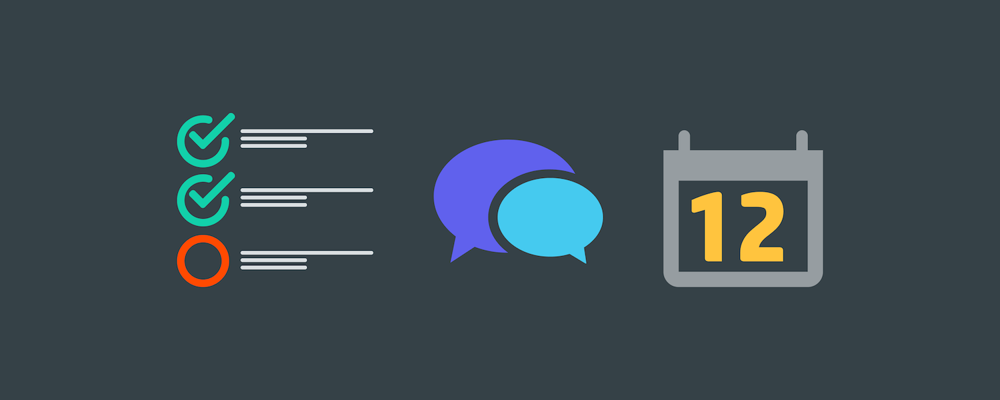
To-do lists alone aren’t enough to send a man to the moon, build a pyramid, and create the device you’re reading on right now. Humanity’s greatest achievements—and your next project—need a workflow, a way to break a project up into achievable chunks, make sure each part is completed in a consistent manner, and ship the finished project on time.
That’s what project management apps are for. They’re tools to break your project down into achievable steps and give your team a workflow to turn the ideas into reality.
Over the past four months, we’ve tested more than 75 project management tools. These systems come in every shape and size, from simple team task management apps to advanced collaboration software that combine hundreds of tools into one. What’s most important, though—and what we looked for in the apps we recommend—is that they help create a workflow for your projects beyond a simple checklist.
After an exhaustive look at the top project management software, we’ve pared down the field to 50 apps across four categories, from core project management to customizable project tools. No matter the tool you pick, if it’s on this list, it can help you properly manage the workflow to ship your next product or unveil your new service. The apps are diverse, with as many or few features as you’d like—but they all let you work the way that fits your team the best.
Quick Reference Guide: Get a free PDF “cheat sheet” with a detailed list of features for each of the 50 apps from The Ultimate Guide to Project Management’s page in the Zapier Learning Center.
Think of something you want to accomplish: washing your car this weekend, moving to a new city, or perhaps climbing Mount Everest. The car task is easy: just go do it, and a half-hour later it’ll be done.
Moving is a bit more tedious: you’ll need to find somewhere to live, pick a deadline to move, pack your stuff, cancel utilities, turn them back on at the new place, rent a truck or hire a moving company, unpack everything, and settle in. And climbing Mount Everest is so hard, you’ll spend over $35,000 and need to hire a whole team of people to help you.
Some tasks at work—like cleaning out your email inbox or writing an internal memo—are like washing your car. You might need to list all the random items you need to tick off, but each task doesn’t need much more attention than that.
Shipping something new, though, is much more difficult. Simpler project might be like moving, while more complicated projects can feel like conquering Mount Everest. You need to plan every step, set deadlines, figure out when each task needs to be finished to hit that deadline, track the time spent, collaborate with your team, and much more.
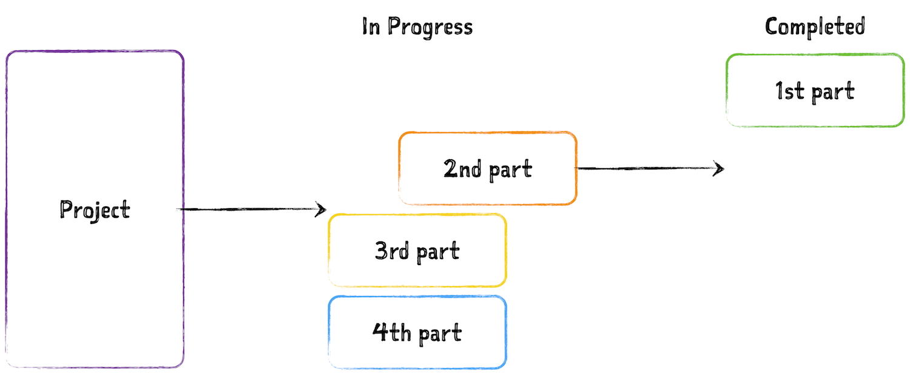
The best project management tools help you do all of this in one place. Some keep it simple, with just your tasks and workflows, while others add chat, forums, invoices, expense tracking, and more functions for a full picture of your projects.
In this roundup, every project management app at least lets you break your project into steps, with a workflow to help you get everything done. Some, like Trello, are simple, focused on just your tasks and the workflow to finish them. Then, others like Zoho Projects include everything, as a one-stop-shop for your project needs.
Beyond a workflow for your tasks, here are some of the features you’ll find in these project management apps:
You might need some of those features—or you might need them all. The best app for your team depends on your project management system.
Do you work best with strict deadlines, using milestones to keep your team on track? Then a traditional project management tool with Gantt charts—calendar-style lists that show when each task should be completed and what overlaps—might be best. Prefer to take each task through the same process? A kanban board with columns for each stage of your process might fit your needs better. Working on a variety of different projects, some that need more process and others where deadlines are king? A hybrid tool with multiple views is likely the best option for your team.
Or, you might find that a full-featured project management is more confusing than it’s worth. You already have a team chat app, calendar tool, time tracker, and documentation hub. All you need is a tool to manage your projects—and a way to tie your apps together.
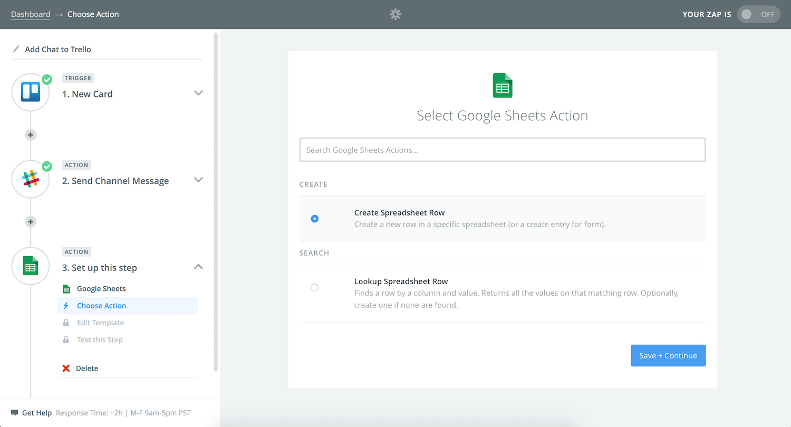
App automation tool Zapier is perfect for that. It connects to most of the apps in this roundup—along with more than 600 other popular tools like Slack, Google Calendar, Xero, an Twilio. Just connect your project management app to Zapier, then create integrations to automatically add tasks to your calendar, notify your team in chat or via SMS, log projects to an invoicing app, and much more.
Here are some quick ideas to help you get started, or head over to the Zapbook to find ways to automate your favorite project management app:
No matter how simple or complicated your project is, ever task likely needs to be discussed. From the straightforward assignments to thorny issues like bugs, a simple checkbox isn’t enough to make most decisions.
So connect your project management app to your team chat tool with Zapier, and start discussions about tasks, projects, and workflows automatically.
Projects don’t start themselves. They come from brainstorming sessions, contact forms, bug reports, and long-term goals.
Zapier can turn all of those into projects, using data from forms, bug reports, and spreadsheet entries to start new projects. Use templates to automatically add tasks and milestones, and you’ll never have to plan routine projects manually again.
Want a simpler project management tool, but still want to track time and send out invoices? Zapier’s here to help. It can start new projects from your invoicing tool, then log time spent on tasks back to the same app. Once it’s time to invoice for your projects, you’ll just have to open the time tracking or invoice tool, and all the data will be there automatically.
Many project management apps let you create reports about your tasks, but what if you want something more customizable? Perhaps you just need a simple log of completed tasks—or maybe you need to create detailed charts and graphs for your postmortem meeting. Or you might want a real-time dashboard that shows your team’s progress.
Just connect your project management app to a notes, spreadsheet, or dashboard app with Zapier, and you’ll have auto-generated records and logs of your projects in the format you want.
Now, it’s time to find the perfect project app for your team. In this guide, we first present with the simplest project management tools, ones that are focused solely on your projects. That section starts with list apps, then looks at Gantt Chart, kanban board, and Scrum sprint-focused apps, each section opening with the simplest and ending with the more advanced apps in the category. Then, you’ll find a list of project apps with chat apps and messaging tools for better communications, followed by client-focused tools that add time tracking and invoicing to project management. And at the end, you’ll find the most advanced, customizable project management tools, ones that when configured could manage everything in your business.
There’s something for everyone—so think about what your projects need, then look through the tools below to find one that fits your needs.
Explore these apps in a presentation with our Slideshare roundup of the Best 50 Project Management Apps.
Project management apps come in all shapes and sizes, and they each have their own unique way of helping you get things done. These apps are no different, but they do have one thing in common: they’re simple.
Each of these project tools let you organize tasks into workflows, assign them to team members, track task progress in some way, and communicate via comments on the tasks. You’ll find some extra features—calendars and reports and customized views—but for the most part, these tools are focused just on the tasks that need completed to get that project shipped.
Here are the best apps focused on task lists, Gantt charts, Kanban Boards, and Scrum Sprints for your projects.
Need to list tasks and quickly arrange them in a workflow? These apps are some of the simplest ways to start managing your projects.
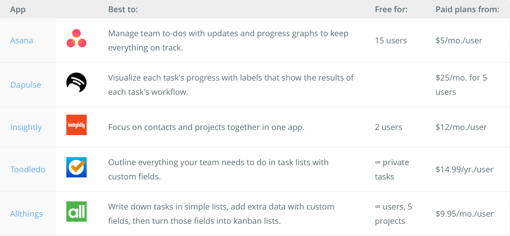
Best for: a more advanced to-do list
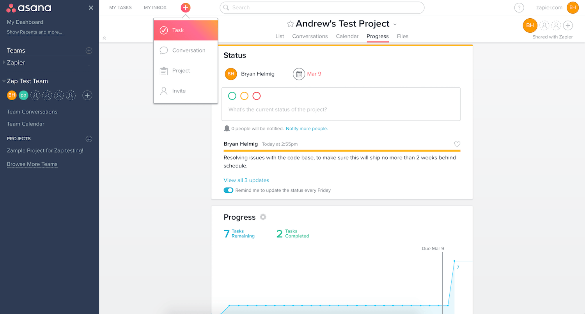
To-do list apps are often too simple for complicated team projects—but not Asana. It’s easy to use, with to-do list based projects focused on due dates. Then, the dashboards and status updates in Asana turn it into something that can manage more complicated projects.
Just list everything you have to do into Asana project lists, add sub-tasks, notes, and tags to keep track of everything in the task, and check off things as they’re done. Then, head over to your dashboard to see a quick graph for each project’s progress, or add a status update to let your team know how everything’s going.
Best for: visualizing exactly how each stage of a workflow went
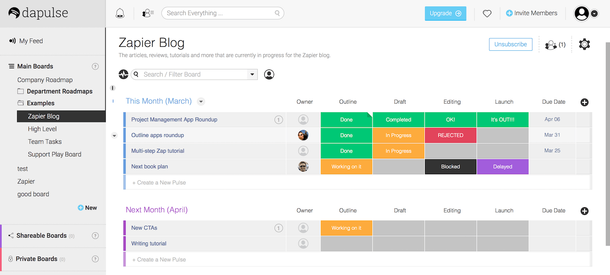
Each step in your workflow would go perfect, ideally, and you’d just check off each task and complete the project. But life happens, and sometimes things don’t work out. That’s why Dapulse replaced the checkbox with a list of workflow stages after each task. When you start out projects, list the things you need to do, then add columns after the task lists for the stages in your workflow. Each stage includes colored labels, which you can customize for the possible ways your projects can go—perhaps green would be Done, black could be Blocked, and red could be Rejected.
Then, at a glance, you can see exactly where each part of your projects stand. Update tasks with just a click, or add comments to a task’s stage to ask a teammate what needs done to get this task completed. It is an easy way to add structure to projects, without having to make complicated workflows and boards.
Best for: projects deeply linked to your contacts
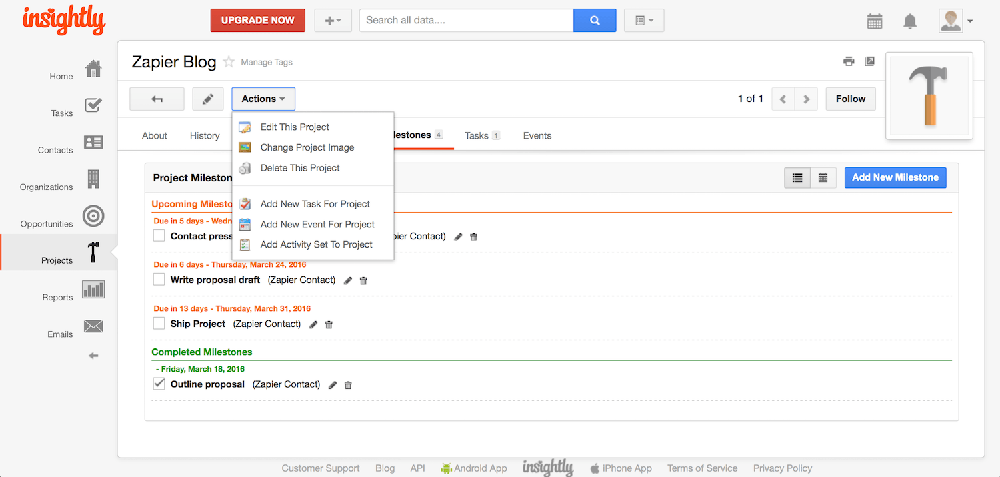
It’s a CRM, but it’s also a project management tool that can help you keep track of your tasks, with pipelines and milestones to keep you on schedule. Insightly is a great tool for managing projects that are deeply tied to your clients and customers. Start out with the CRM, nurturing potential projects with your clients until you win a new job. Then, link those projects and tasks to their respective clients, with their contact info only a click away so you can easily get in touch with them.
There’s two ways to manage projects in Insightly: with pipelines or milestones. Pipelines let you set a broad workflow for your project, with tasks and events that will automatically be added to the project as you hit a particular stage, making it easy to re-start similar projects in the future. Milestones, on the other hand, let you list major events along your project’s schedule, to keep the finish goal in mind. Either way, once the project’s finished, you can log it to your contact’s profile and start working on winning the next big project.
Best for: task lists with custom fields
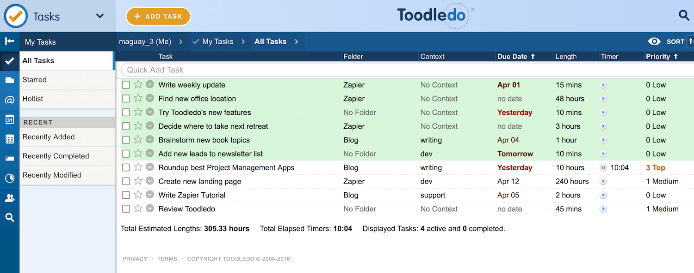
Spreadsheets are flexible to a fault—they’re so easy to use, it’s hard not to use them for everything, even managing complex projects. If you want a spreadsheet-style tool that’s more focused on projects, Toodledo’s customizable task interface lets you do something similar, with collaboration tools and notifications you’d expect from a project app. Just select the features you want on tasks—timer, length, goal, and status—then add the tasks you need to complete.
Then, structure your tasks in the Outline mode, where you can drag-and-drop tasks into the order you want, with as deep of a hierarchy as your projects need. There’s also a habits tool, to keep your team focused on checking off work in the most important areas each day, and customized notifications so you’ll know about due tasks ahead of time. It’s simpler than the average project management tool, but lets you make a customized workflow with as much structure and guidance as you need.
Other great team to-do list apps include Wunderlist, Todoist, Producteev and Nozbe—they’re more focused on plain to-do lists, and don’t include as many project-focused tools, but might be great options for your simpler projects. Or, check out the other best to-do list apps for other simpler project tools.
Best for: writing tasks in a list then organizing them on a kanban board
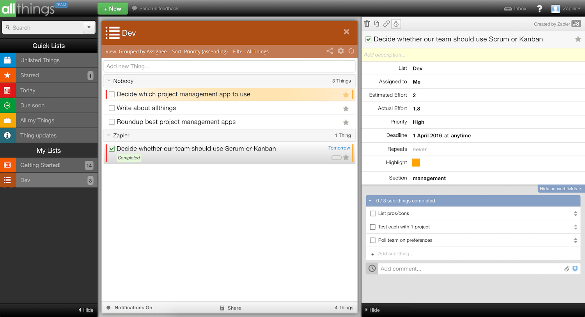
Sometimes it’s nice to just quickly list tasks you need to do, and then organize them later. That’s what makes Allthings’ two task modes so handy. Projects open in a list by default, where you can quickly type in everything you need to accomplish. Track extra details, perhaps your project stage or the team that needs to do it, with extra fields, and select a color and icon for the project from the settings.
Then, click the View button on the top right, and choose to sort the tasks in a list grouped by any of your task fields. Or, select Stack by and turn any field into kanban-style columns where you can quickly reassign tasks, move them to the next part of a process, or even reschedule them with scrum-style sprints if you stack by week. It’s a flexible way to add tasks and organize them later in any way you want.
Need to plan projects with a timeline that shows when each task is due and makes sure things don’t overlap? Gantt charts are a great tool for that—and each of these tools include powerful Gantt chart views to organize your projects.
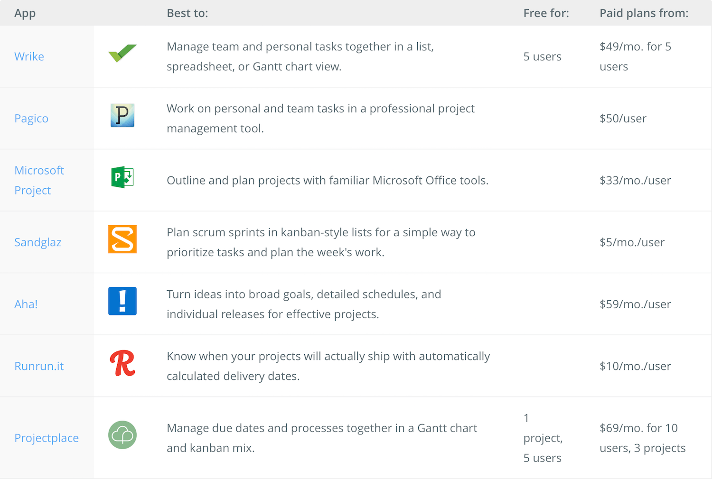
Best for: flexible yet simple task lists
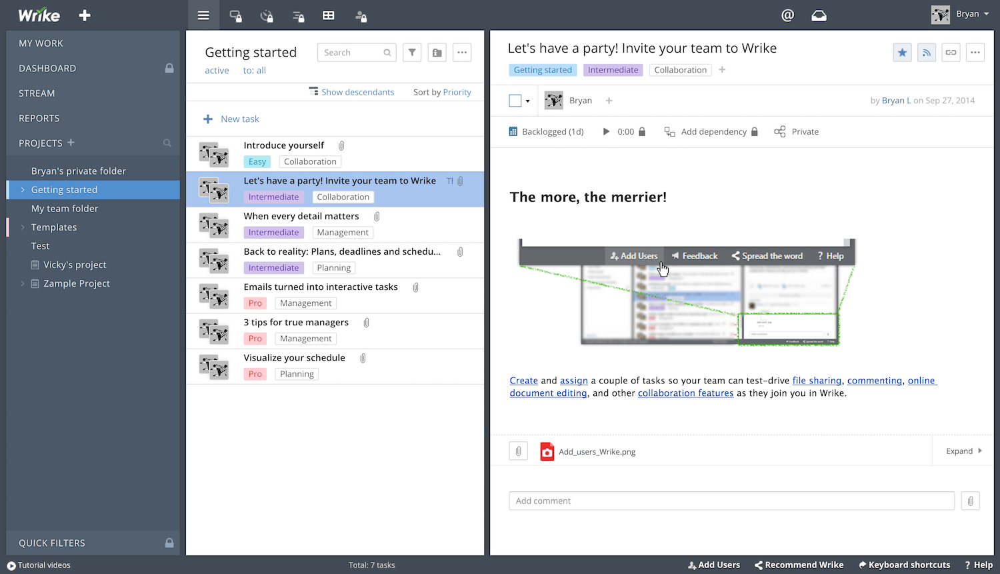
To-do lists are too simple, with just lists of things you need to do and checkboxes to mark them as done, but at least they let you know what’s due. Spreadsheets are the exact opposite—infinitely flexible, but tough to know what needs done next. Wrike offers the best of both worlds, with a spreadsheet view for tasks and custom fields, along with due dates, comments, and everything else you’d expect from a project management tool.
You can just add tasks as simple to-dos, and check them off if you’d like. Or, you can customize tasks with durations, track time, write rich-text notes, and set them as pending or in-progress instead of just checking them off. And to keep up with tasks anywhere, you can export a customized calendar feed with just the data about your projects that you want.
Best for: personal and team projects, in native apps
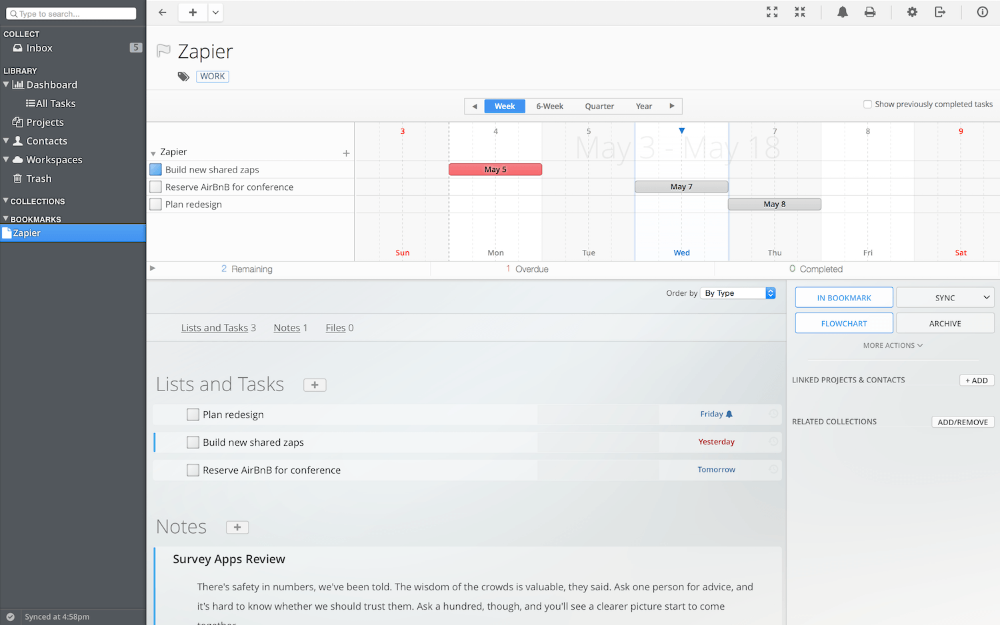
Project management apps are usually built for around teams projects; you’ll need another app to keep track of your personal tasks. Pagico merges your individual and team tasks into a single platform that feels more personal. It feels more like your other favorite personal software, with native apps for every platform so you can quick-add tasks from anywhere or drag-and-drop files into projects. And you can make as many projects as you need: some shared with your team, others perhaps shared with freelancers working on your side project, and the rest kept private on your own computer.
It’s more than just a to-do list, though. You can add notes and files to projects, view tasks in a list or Gantt chart, and search through everything. You can plan each project better, by seeing every task on the same Gantt chart, where you can make sure nothing overlaps. Or, if you need to focus, just open a workspace, and you’ll only see the projects and tasks in that workspace—a great way to keep yourself from worrying about home tasks while at work.
Best for: intranet collaboration with Microsoft Office integration
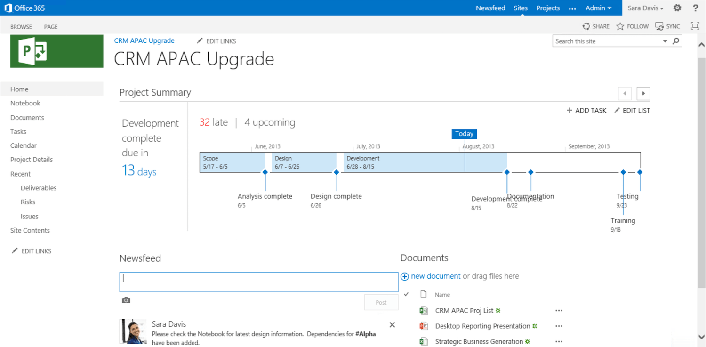
This one’s for the Microsoft faithful. If your team collaborates in a Sharepoint workspace, uses Skype for meetings, and creates reports in Excel, Microsoft Project Online fits in the middle of every tool you use.
It’s a new online version of the traditional desktop project management software, with tools to organize projects with tasks and milestones, and view them in detailed Gantt charts. And, since it’s online, the new Microsoft Project lets you chat or make calls with Skype for Business and share social network-like updates about projects in a project newsfeed.
Microsoft Project Online is built around Office, so you can easily bring in data from other Office tools you use. You can turn Sharepoint task lists into projects, create project workflow designs in Visio, search through Office 365 and Sharepoint data from projects, and visualize project data using Excel Services. Project Online also integrates with Active Directory, for a simple way to integrate it with your existing device and user management. Or, if you want to manage projects on your own, without a web app, the native version of Microsoft Project is still an effective tool for that.
If you want a native app for managing projects individually on your Mac or iPad, OmniPlan is a great similar app with Gantt charts, tasks, and reports in polished native apps.
Best for: planning scrum sprints in kanban-style lists
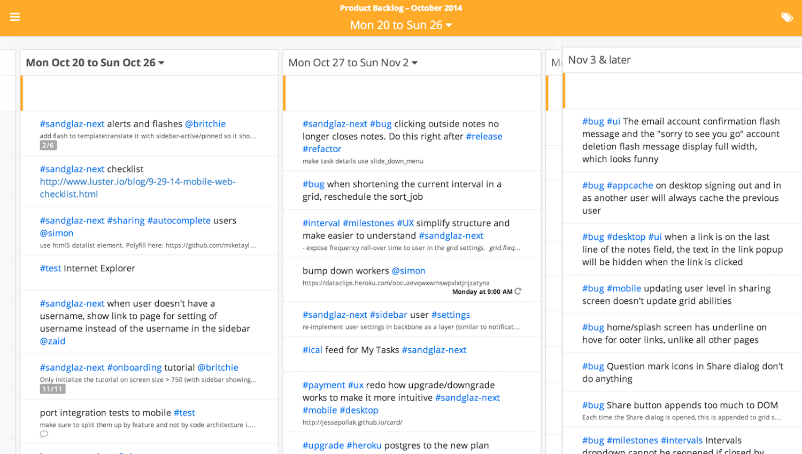
Sandglaz takes a unique approach to scheduling tasks. Their tool mashes up the best aspects of kanban and scrum management styles to make project planning simple. Instead of columns for each stage of a project’s workflow, as you’d have in a kanban board, Sandglaz shows a column for each section of your sprint, with new columns for the next sprints automatically added. Each sprint is on1 week long by default, but you can change the default or tweak a single sprint’s length if you need.
Then, add your tasks to each sprint, arranging them between the Important, Less Important, and Completed markers to prioritize tasks. If anything doesn’t get completed this sprint, just drag it to the next sprint and keep on working. Specific due dates won’t be nearly as important, and you can instead focus on the broad timeframe of your project and what really needs to be accomplished this week.
Best for: turning project plans into reality
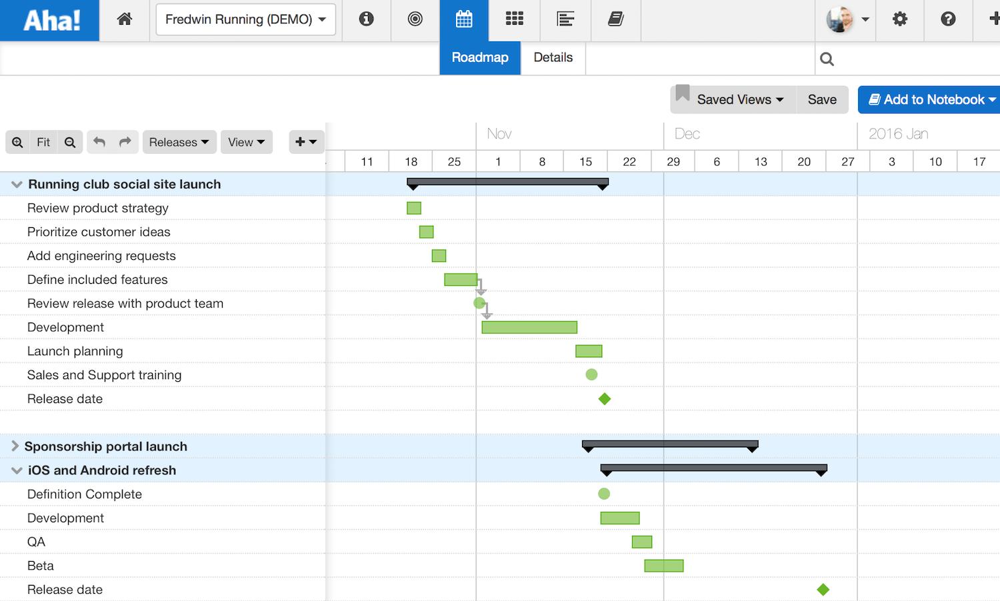
Tasks shouldn’t just be random things to do—they should be items that are purposefully chosen to help your team achieve its goals. Instead of tossing you into the deep end just starting off with a blank project, Aha! encourages you to first map out the project’s core ideas. List your broad vision and goals, figure out which ideas fit your company’s strategy best, then research your competition and see if this project is truly something worth spending your time on.
That’s when the project planning starts. Aha! has you lay out the broad release schedule, pull in ideas from your team and users about what to include in that release, and turn those into tasks on a kanban board where your team can make the project a reality. And to make sure everyone stays focused on the larger goals, there are’s notebooks and and reports where you can write down ideas, see how close you are to achieving goals, and decide what project to start brainstorming next.
Productboard and Prodpad are two other great tools for planning your project roadmaps.
Best for: deciding what needs done next
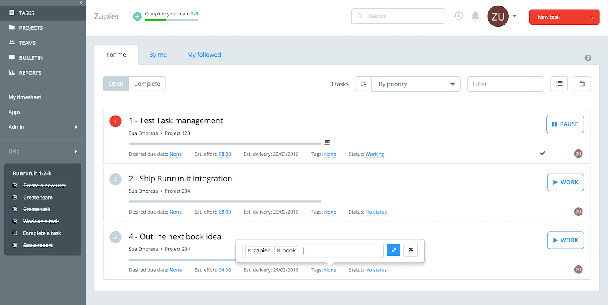
It’s easy to assign an arbitrary due date to a task, and assume it will get done then. “But we rarely account for how many hours each task will take—then they pile up, and we go into freak-out mode. That’s why Runrun.it doesn’t ask for due dates on tasks. Instead, you add start dates to projects, then add your default types of tasks—say, editing, bug fixes, review, and more—along with the time each type of task should take.
Add all of your tasks and projects, and assign them to team members, and Runrun.it will then estimate delivery dates for each task and project based on the types of tasks. You can then see exactly how overloaded each person on the team may be, reassign work to speed things up, and track time on each task to improve future estimates.
Best for: Gantt chart and kanban mixed into a seamless workflow
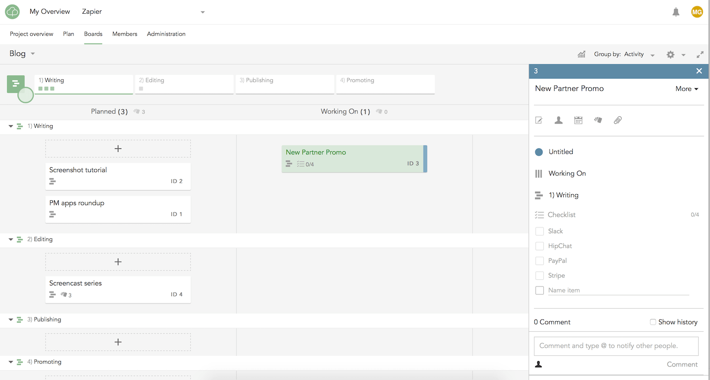
Kanban boards keep you focused on your workflow, while Gantt charts keep due dates front-and-center. Projectplace combines both to help you plan your work, run each step through your workflows, and ship your projects on time.
Start a new project, then add your activities in a list, along with start and end dates. Be sure to list each task’s dependencies, to show what needs to be completed first. Then jump over to the board view, and each activity will now have kanban-like columns to add tasks and run them through processes. You can finish tasks in each activity, then move them on to the next activity for a detailed way to keep track of your entire project workflow.
When workflows are most important, kanban boards are a handy way to organize projects. Create a list for each stage of your workflow, then add tasks as “cards” onto the lists. Instead of checking them off when completed, just drag the card to the next list to send it on to the next stage—say to get a finished article edited, or to have code reviewed before shipping.
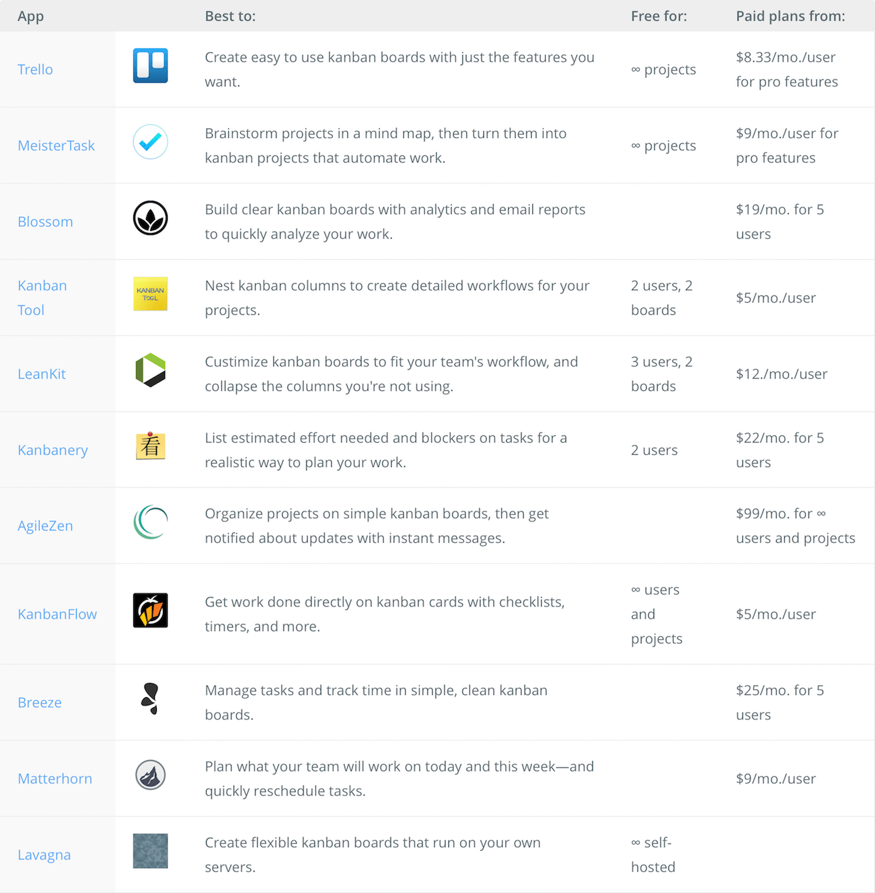
Best for: easy-to-use kanban boards with only the features you want
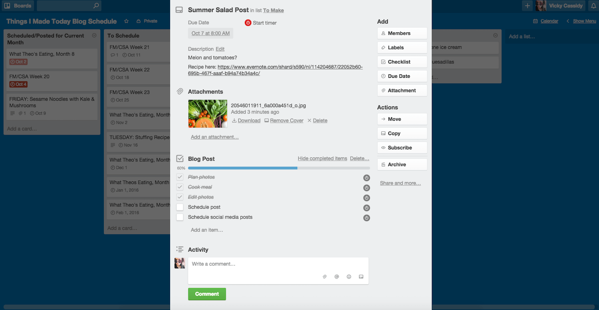
Trello’s the app that made kanban boards popular with its bright colors and simple workflows. You start with a blank board, build your own workflow with lists by typing their name and pressing enter, then can add tasks to lists one after another just by pressing enter. Have a list of tasks you’ve already written? Just paste it as a new task, and Trello will offer to turn each item into its own task.
Trello’s designed for collaboration, with comments on each task and centralized notifications. You can make boards for any of your own projects, share them with your collaborators, then join company boards and manage them all together. Then, you can add on the features you need for your work. Trello includes an optional calendar to visualize due dates, fading options to let your older tasks get forgotten, and app integrations to bring in customer data. You can even pick background colors or images for boards, and create colored tags to organize things. It’s a project tool that’s as simple or complex as you want.
Best for: turning brainstorming sessions into projects
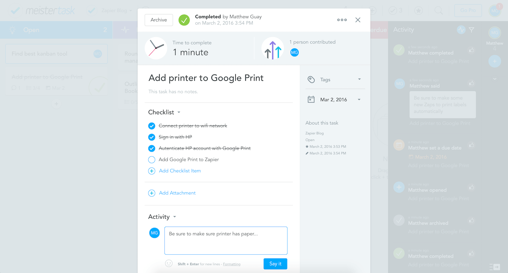
If you’ve ever used a mindmap to scope out a project, try MeisterTask. This app from the MindMeister team lets you transform mindmaps into projects with a click, so you can start iterating on ideas right away.
MeisterTask brings a fresh and friendly face to kanban boards, with a dashboard that shows due tasks from all your boards in one place. It’s built around automations, too, so you can customize it to fit the way your team works. When you move a card to a new column in MeisterTask, it can automatically send notifications or copy data to another app. That way, you can get started on the next part of your project just by moving a card.
Best for: clear kanban boards with analytics
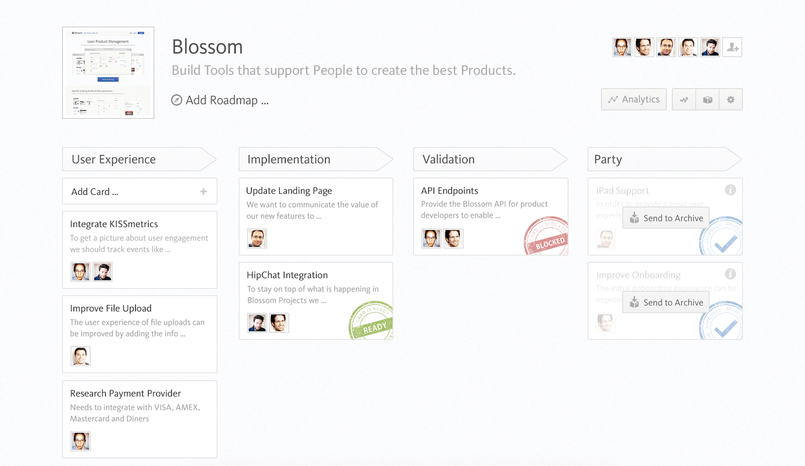
Out of sight, out of mind. The two toughest things to track during a project are your completed tasks, and your blocked tasks. Checked off tasks often just disappear, and blocked tasks look like any other thing that needs done. Blossom balances that out, with rubber stamp-style labels on cards that show when tasks are blocked, ready to be worked on, or completed. It even tracks how long a task sat in limbo, with quick stats when you hover over a card or detailed stats on your project’s overall activity.
But you might not have to check the activity page, since Blossom will keep you informed on its own. Daily email digests will show you what’s been completed, where you’re behind, and what needs done next, for actionable analytics combined with your real tasks to ship projects quicker.
Best for: nested columns with time tracking
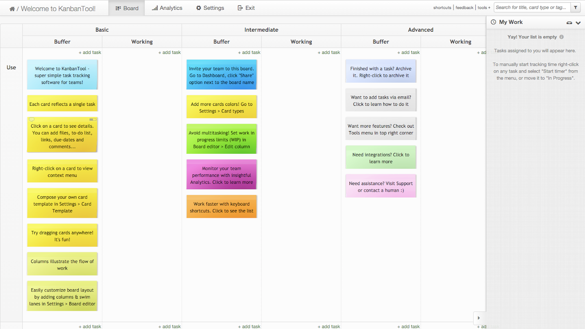
When a single column of tasks isn’t enough for one stage of your workflow, KanbanTool’s flexible boards come in handy. Each Kanban list can have multiple columns, or you could nest another list inside larger lists for even more detailed workflows. There are’s also swimlanes that divide lists into sections, to manage multiple projects on the same board.
Each card on your KanbanTool boards includes smart time tracking that watches how long the card was in each list of your workflow, along with the total amount of time the task took to complete. You can then easily see which parts of your workflows cause the most bottlenecks, so you can improve your workflows and figure out where to focus time and resources to complete projects faster next time.
Best for: customizable kanban workflows
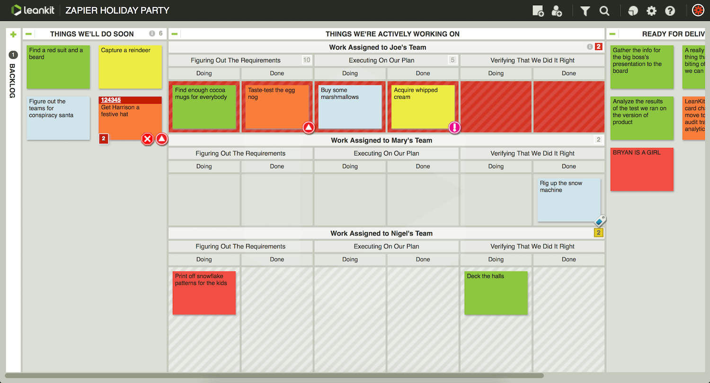
Not every stage of your workflows will fit into the same kanban lists. LeanKit’s customizable kanban boards let you make flexible boards that fit your projects perfectly. You can divide lists into sections, perhaps for workflows where some tasks in the same project need to go through a different process, or just to organize tasks for each team. Each list can include a Work in Progress limit, to keep everyone from getting overwhelmed with tasks. And if you need to focus, just hide a list and focus on the columns with your current tasks.
LeanKit gives you an at-a-glance overview of what each task entails, as each card is a small thumbnail of everything in the card. Cards can track sub-tasks, connected tasks, comments, and anything else you need to track about tasks—each of which show up as icons on the card thumbnail. Then, as you finish your projects, the reports in LeanKit will show which parts of your workflow caused bottlenecks to help improve next time.
Best for: organizing kanban boards into workspaces
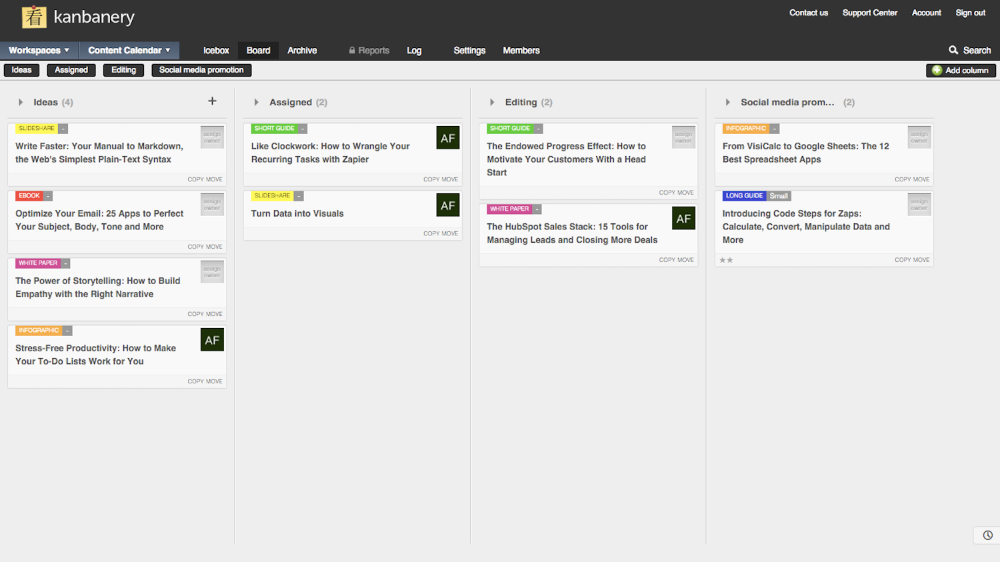
Kanbanery makes it simple to organize projects on kanban boards, with its pre-made board templates for a handful of example workflows. Each includes columns, task types, and task time estimates that you can then tweak for your own projects.
Each list can be quickly tweaked with capacity limits to ensure no stage of the workflow is overbooked. Perhaps you can only edit three blog posts at once; add a capacity of 3 to your Editing column, and you’ll have to clear out some editing work before you can add any more tasks. Or, if you have never-ending lists—perhaps your Ideas or Backlog column—just collapse them to hide the clutter, and stay focused on your current workflow stage.
Best for: getting notified about project updates in IM
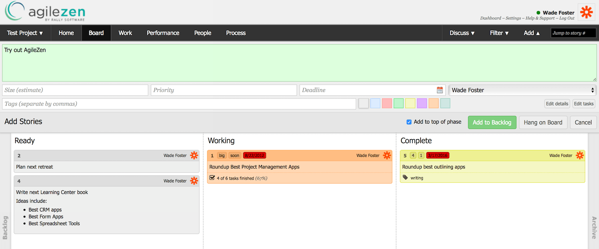
If your team uses Google Talk to communicate—or if you would like to get simple notifications about tasks right inside iMessage or Gmail—AgileZen’s clean kanban boards may be what your projects need. You can list each task’s priority and estimated size, then organize tasks on a customizable board that includes archive and backlog columns that are hidden by default.
Then, as your tasks are moved to the next columns or your team chimes in with comments, you’ll get the notifications directly in your favorite chat or email app. You can check out your team’s performance from AgileZen’s graphs, which show how long cards sat in each stage of the process, how long they were blocked, and how efficiently your team works.
Best for: Getting work done directly on kanban cards
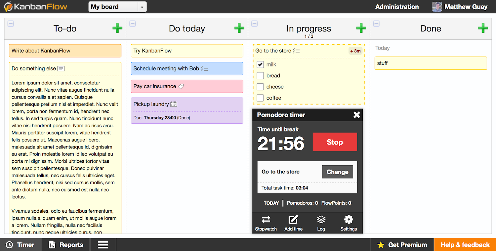
Kanban boards show an overview of projects at a glance, but you typically have to open a card to see its subtasks and other info. KanbanFlow helps you work faster, with sub-tasks, notes, and due dates right on the card’s preview, along with color-coded cards to visually classify tasks. You can check off tasks or visit links from comments without opening the card, to help you stay focused and work faster.
KanbanFlow also includes a timer, which both tracks the time you spend working and uses the pomodoro method with reminders to take breaks every 25 minutes to maintain your productivity. With those features to keep your team productive, you’ll get your projects accomplished even faster.
Best for: clean kanban boards that track time
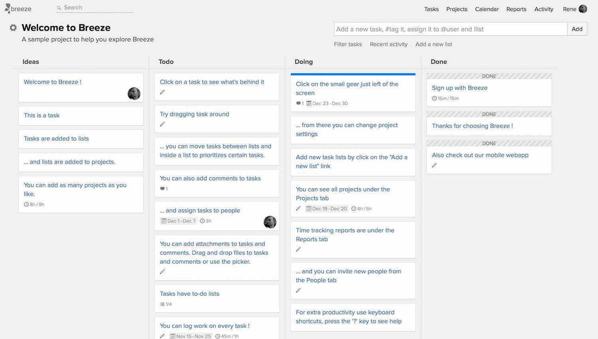
Each task represents more than just a task—it’s a tiny project of its own. Breeze tracks these details directly on each task’s card. You can list sub-tasks on cards, and check them off without even opening the task. Track time on the tasks, log work completed, then move the task to the next column for its next step in your workflow.
You can let clients in, too, with a special client mode so they can see the tasks and logged work but not the comments and private tasks you may also be working on. If you want, though, you can let clients move cards between lists, perhaps to change task priority or add their own new ideas about a project—something that might fit well with projects where clients need direct input on what gets done first.
Best for: planning daily and weekly schedules
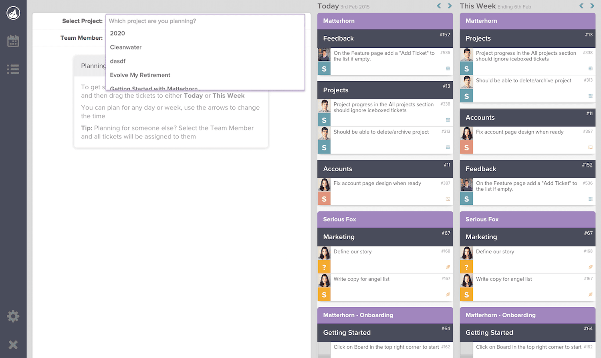
Planning your work schedule across multiple projects can be a daunting task. That’s where Matterhorn’s Planner mode comes in handy. View assigned tasks for today and this week across all projects, or see just what’s assigned to one team member, and reassign or reschedule as needed. You’ll get a quick glance at the agenda for this and next week—and changing things around only takes a click.
Matterhorn will then keeps your projects organized, with customizable kanban-style boards that group tasks into sections to group tasks. Pull on-hold ideas into the icebox list, group similar tasks together, and drag them on towards completion as your projects get close to completion. You’ll be able to see the progress in graphs on your dashboard, and in a daily email where Matterhorn will automatically update everyone on your team’s productivity.
Best for: kanban boards on your own servers
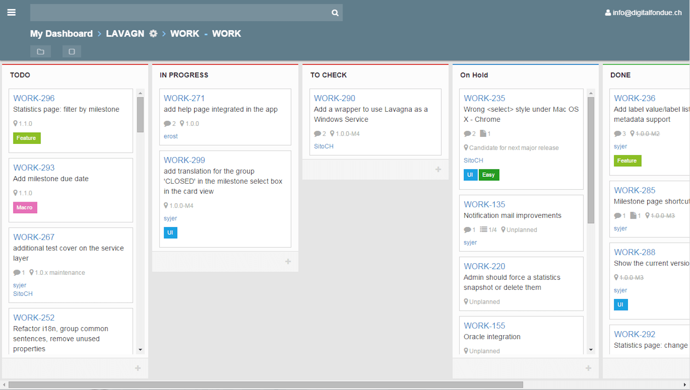
At first glance, Lavagna seems like your standard Kanban app. But here, your labels have superpowers. Labels in Lavagna can link to other cards or users, have lists for priority and other options, or just be a standard colored label. Then, organize your cards on flexible lists, using labels to create the automated workflows that fit your team’s needs.
Managing users is surprisingly simple for a self-hosted app app you run on your own servers. Users can login with any OAuth provider, then you can manage exactly what each user can see and change in your boards. There’s a dashboard to see all projects at a glance, reports to see average cards per user and other stats, and milestones for a way to set broader deadlines in addition to individual task due dates.
When both workflows and deadlines are important, Scrum sprints fit right between Gantt charts’ calendar views and kanban boards’ workflows. Instead of assigning a due date to each task, pull tasks into sprints, or time periods when a specific set of work should be done. Finish those tasks, then move onto the next sprint to polish or add more features.
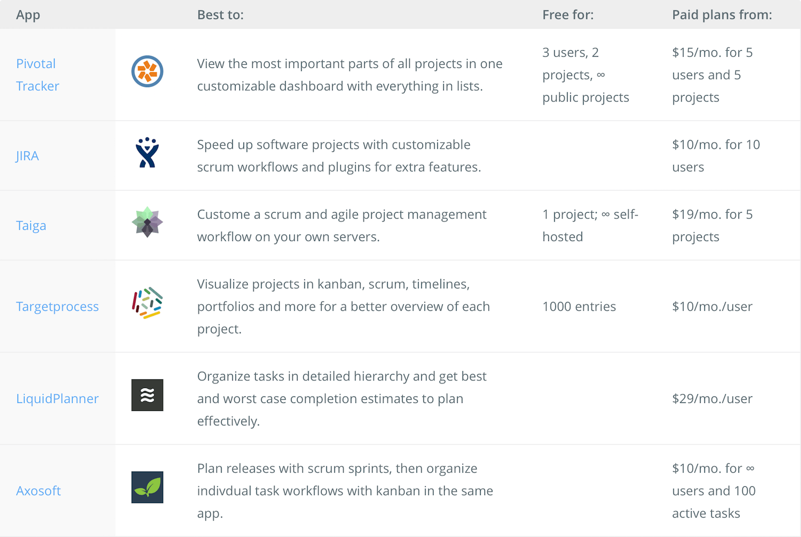
Best for: Seeing important parts of all projects at once
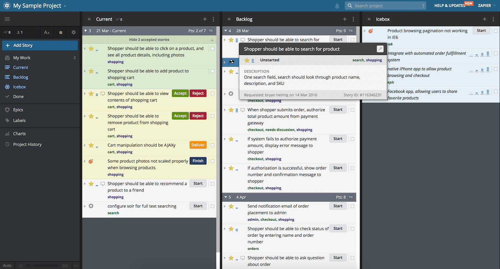
Pivotal Tracker looks much like a typical kanban board, but its flexible scrum workflows and dashboards make it a tool to simplify your most complex projects and work on them all together.
It starts with scrum stories, organized in lists with iterations to break the project up into sprints. Add notes, tasks, and assignments, then use workflows to accept, start work, finish, and deliver completed stories and ship them in your next product release. And for even more structure, there’s an Icebox of tasks you may get to someday, and Epics to lay out your broader project plans.
With all those details, each project can quickly get overwhelmingly complicated—something Pivotal Tracker’s interface is designed for. You can add or remove columns from the interface as you want, to perhaps only show your work or to see everything at once—complete with charts on the project in just another column. You can even make new dashboards that pull all of your projects into other columns, to see the most important parts of each project together.
Best for: turning tasks into new releases
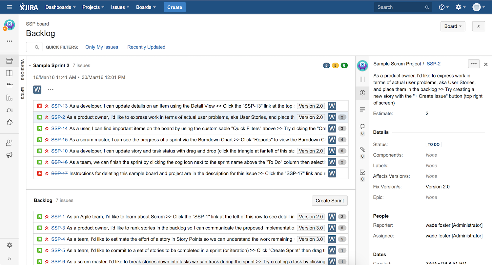
Some tasks just need to be checked off. Others need to be taken through an approval or editorial process, then shipped as part of a new release. JIRA is designed around software development projects, and is deeply integrated with Bitbucket code repositories, Confluence documentation, Bamboo tests, and HipChat chats. But JIRA’s customizable workflows, scrum lists, kanban boards, and hundreds of add-ons for extra features make it a handy tool for any type of projects.
Set up your own workflow, with settings for each status stage and custom fields on tasks to store anything you need. Then, make your scrum sprints or kanban lists, add tasks to the right part, and start shipping your next projects with a full log of the tasks that went into that release.
Best for: customizable scrum and agile projects
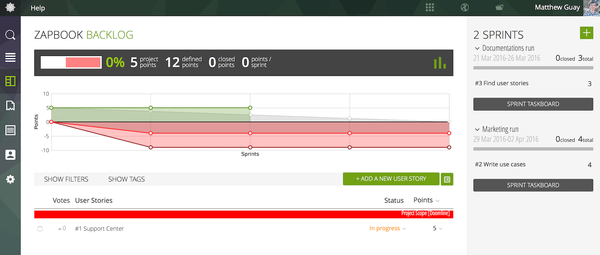
Sometimes it’s not the due dates on individual tasks that really matter. It’s this work week or project timeframe—and what you can accomplish during it—that really really matters, and decides what will get shipped. Taiga is an agile project management tool that simplifies planning those sprints. Just create a new Scrum project, add user stories with things you wish to accomplish and the points (an estimate of the effort they’ll require) that item would require from each team. Then, add sprints with a timespan for each one, drag in the stories you want to complete, and then add tasks to each story to start checking off.
Your story tasks will show up in a scrum-style list by default, or you can enable a kanban board view instead for more routine projects and tasks. Everything is customizable—you can add wiki and call tools, and even run Taiga on your own servers and tweak its code if you want. It’s a great way to build custom workflows for agile projects.
Best for: customized boards to view projects the way you want
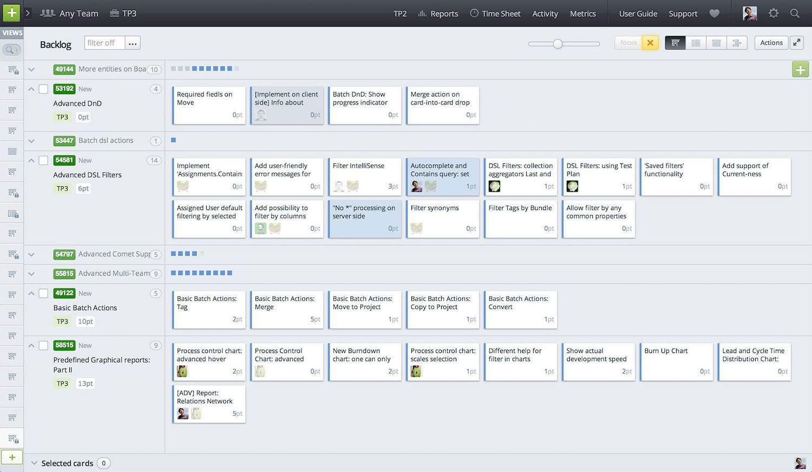
Boards are a great way to organize tasks, but traditional vertical kanban lists might not be best for every project. Targetprocess lets you organize boards the way you want, with story map, product roadmap, sprint plans, traditional kanban, and other detailed layouts for your projects. They each have their advantages: some let you break parts of projects down into smaller steps, others help you organize a portfolio of projects, and even the traditional kanban board lets you collapse lists and still get a quick overview of what’s inside. And each board is just a layout to visualize your tasks: you can tweak anything, or even delete a board, and the cards will stay the same, ready to be viewed in another board with just a click on the left sidebar.
It’s designed for large, complex projects, with tools to help you make sense of them all. Reports help you find how teams perform and other smaller details from the big picture, while customized dashboards let you combine those reports with tasks to better manage your workflow. You’ll have the big picture and the takeaways it can offer, along with the task you need to do next.
Best for: getting best and worst case estimates for a project’s completion
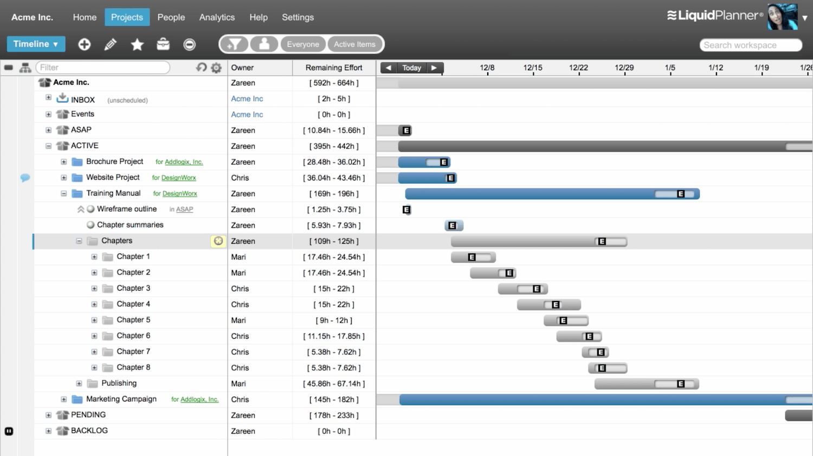
Folders work well for organizing files on your computer, and in LiquidPlanner, they can work equally well to organize everything you need to accomplish in tidy groups—and can even be a way to see how long all your tasks will take. Add as many folders and sub-folders as you need to organize everything in a project, then add the estimated time each task will need.
The folders will then pull that estimated time together, so you can collapse a folder and see an estimate of how much time that entire set of tasks will take to complete. LiquidPlanner will then estimate best and worst case scenarios, for an even clearer picture of when the project will likely be finished.
It’s a simple way to organize your tasks, and also a great way to build your own waterfall or scrum workflows. You could make folders for each part of your workflow process or scrum sprint, then use the estimated time LiquidPlanner adds to folders to make sure you can finish the work in the set timeframe.
Best for: a seamless scrum and kanban workflow
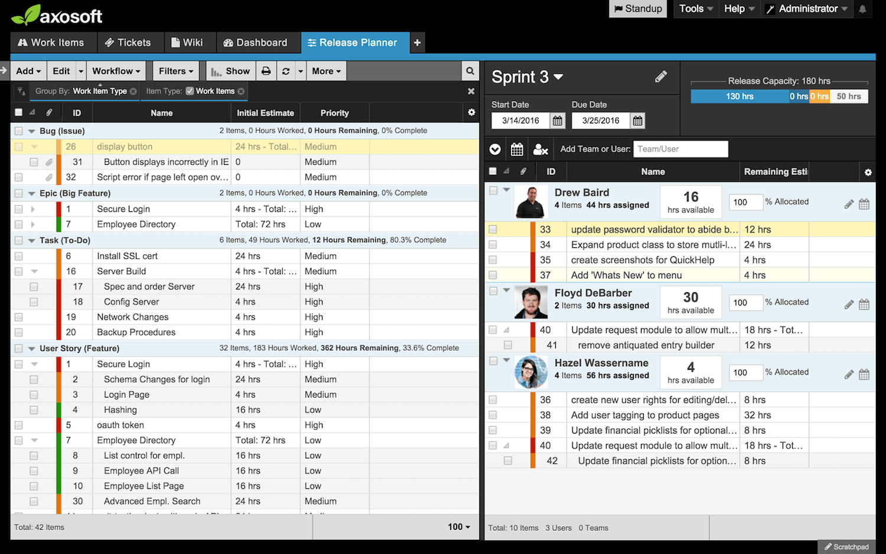
Scrum releases are a great way to plan your project’s broad deadlines and goals, while kanban boards help create a workflow for your tasks. Axosoft gives you the best of both worlds. You can plan projects in a spreadsheet-style scrum list, using charts to figure out how much work can fit into each time period.
Then, when it’s time to work on the tasks, Axosoft’s kanban board gives you columns for every step of your workflow. Move cards around and work on them together, and the changes will reflect back in your manager’s scrum view. And when you need to brainstorm and work on project details together, the built-in wiki is a handy way to document anything and even share details in public if you want.
There are things to be done, milestones to meet, and deadlines to beat. And yet, sometimes a comment is not enough to figure out how to proceed with a project. You need time to chat with your team, work out a solution, and then check off that next big goal.
You could always use a team chat app, or you could use a project management app that brings chat into your projects. These tools include tools for managing tasks, deadline, and workflows like the previous apps, then also add team chat, documents, and other messaging tools to keep everything about your project in one place.
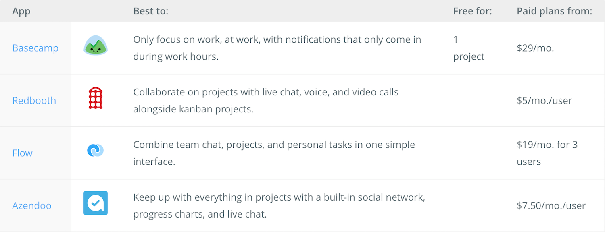
Best for: unintrusive team productivity
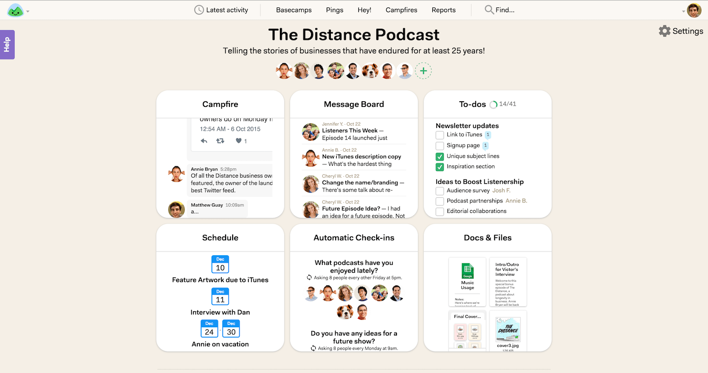
One of the original online project management apps, Basecamp has always taken a simpler approach to projects. It’s designed to keep everything about your projects—discussions, tasks, emails, and files—in one place.
The original version of Basecamp did this with a typical tabbed layout; the next version then borrowed a page from its sidekick app Backpack and put everything for the project literally on the same page. Basecamp 3 builds on that, adding Campfire team chat into the mix with a modern take on a tabbed interface that shows quick previews of each section along the top. You can chat about your project, right from that project’s page, and see everything everyone’s said.
The problem with so much in one place is that projects can become noisy, shouting for your attention at all hours. But not Basecamp. With its Work Can Wait feature, you can set your available days and hours, and Basecamp will only notify you of new messages, tasks, and other notifications when you’re actually working. You won’t get left out, either: there are quick reports to see what’s happened, a list of notifications to quickly catch up, and check-ins for a quick way to see what your team’s up to.
Best for: live chat, voice and video calls in projects
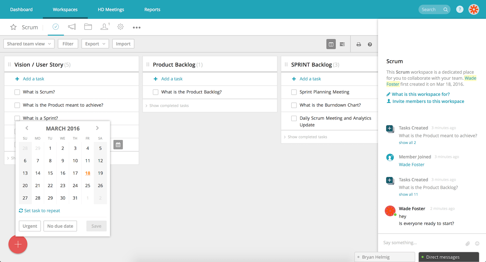
Chat and messages might not even be enough for your team’s communications needs. Redbooth throws in voice and video calls—complete with screen sharing—so your team can collaborate right from your projects. Each project workspace gets its own team chat, to discuss that project, and there’s a familiar chat box on the bottom of the screen where you can chat with any team member. Then, when you need to talk things through, a real call is only a click away.
Redbooth lets you manage your projects the way you want, with kanban boards or lists to organize tasks and time tracking to see where your day goes. Or, if you’re not sure where to start, there’s a library of project templates to start your projects out in a click.
Redbooth Price: From $5/month per user Pro plan for unlimited projects and 20 hr/month video calls. - For a deeper look at Redbooth’s features and pricing plans, check out our Redbooth review. - See Redbooth integrations on Zapier.
Best for: creating tasks directly from chat
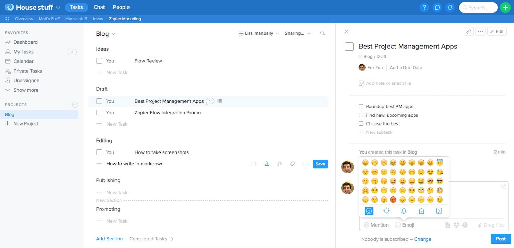
Flow at first glance looks a bit more like a to-do list app, with simple lists of tasks. But once you break those task lists up into sections, add due dates and sub-tasks, then view them in a kanban board, you have a place where you can manage any project workflow. You’ll work in workspaces, with as many project lists as you need to organize everything in progress.
Then, when you need help, Flow’s Chat tab lets you talk to your team in public or private group chats, or with direct messages to individuals on your team. And if you talk about anything that should get turned into a task, press Tab in the chat box, type in your task and press Enter, and it’ll be added to your to-do list and saved in the chat automatically.
Best for: social networking around projects
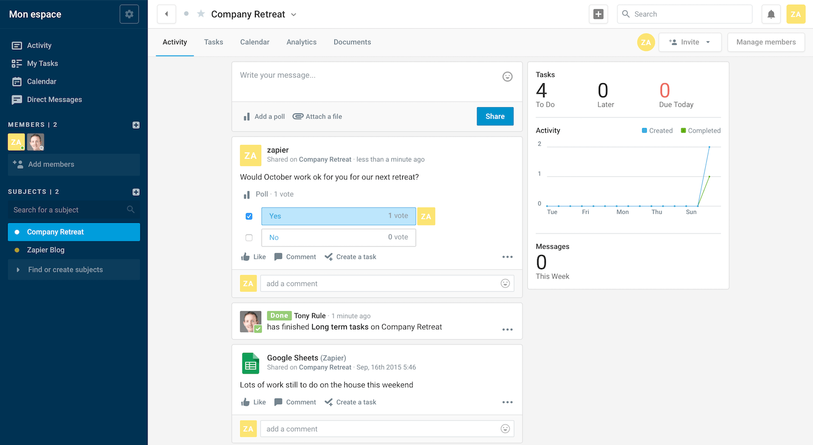
Live chat with your full team can get confusing, with in-depth conversations interspersed with random chit-chat. Azendoo keeps things focused, with Facebook-style group posts that live on each project’s (or Subject, in Azendoo) space. You can post about your progress, share a file or photo, or start a quick Yes/No poll, then join in the conversation via comments. And if you need to talk in real-time about something, there’s still direct messages for live chat with individual colleagues.
Tasks in Azendoo are organized more like a to-do list, with section headers to organize task groups or make your own workflow. Import documents from Google Drive, Dropbox, or Evernote to keep up with notes and info about the project—or even pull in Evernote notes with to-dos to quickly add tasks—and see your team’s productivity with analytics in a dedicated tab or on your dashboard. It’s a simpler way to stay productive with less distraction from always-on chat.
When you’re working on your own company’s projects, the important part is shipping the new thing and moving on to the next project. With client work, though, you’ll need to handle invoicing, follow-up requests, sporadic feedback, and future-facing projects.
Client-focused project management tools are designed to help you handle all of this. They include the same productivity tools other project management apps offer, along with tools to track the time you spend on tasks and turn it into invoices. You can focus on getting work done for your client, while your project management tool makes sure you don’t forget anything and ensures you’ll get paid for your time.
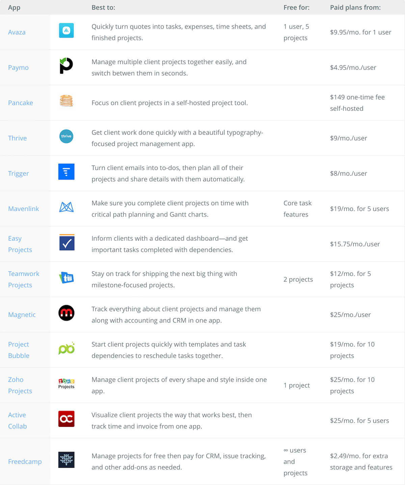
Best for: quickly turning quotes into finished projects
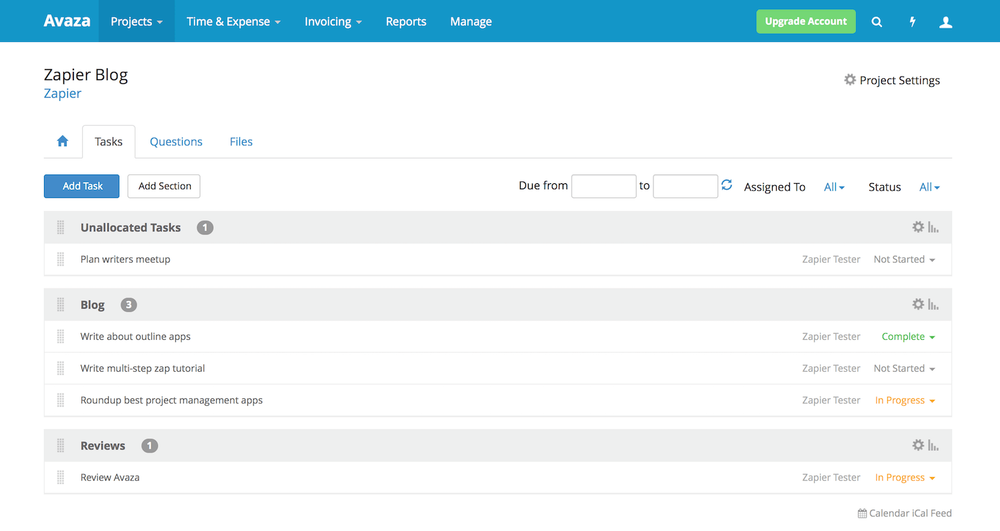
Looking for a simpler tool for client projects? Avaza lets you start out by sending a quote to your clients for a potential job. Once they approve it, plan out your project with to-do lists in sections for each goal or stage of the projects. Every section can have its own start and due dates, for a quick way to plan work without having to set due dates on individual tasks, and Avaza will then show a burndown chart that shows the time you’ll need to complete each task versus the project’s due date.
Client work often means expenses, which you can capture in Avaza by snapping a photo of your receipts. Once everything’s done, you can turn your time sheets and expenses into invoices, and get paid via credit card directly from Avaza, without using a 3rd party payment system. It’s a simple way to manage everything about your client projects and get paid for your work.
Best for: managing multiple client projects together
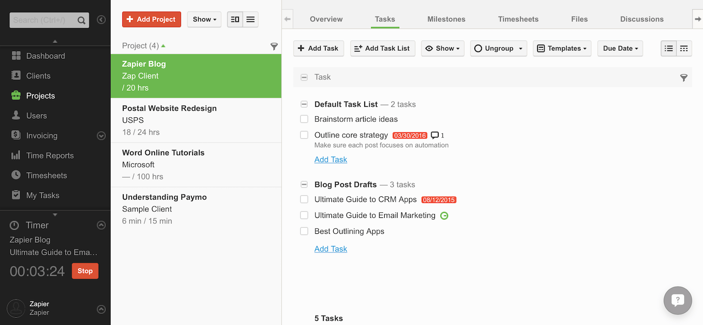
Need a quick way to peek into multiple projects without hassle? Paymo is designed around switching between projects, with a three column interface that’s similar to an email or notes app. There’s tool on the left, a list of projects in the middle, and your current project on the right—with its own dashboard, tasks, and more. Just select another project to see its tasks or notes, then jump back to your original project in just a click.
Paymo’s project organization is simple by default, with plain text to-dos for each task. Quickly list everything that needs done, then organize them into separate lists and start the timer from the clock icon on any task to start logging your work. Then, when you need to switch focus, just switch to another project and click the clock on a task there to log work on that project.
Best for: self-hosted client-focused productivity
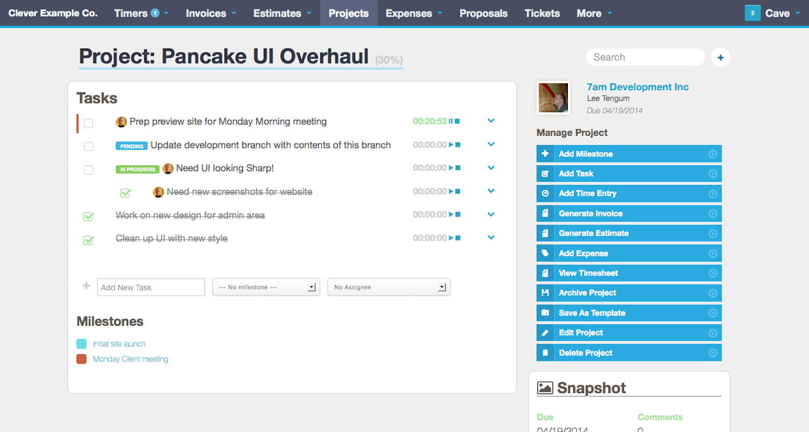
Working with dozens of clients at once can be confusing at best, and hard on your budget if your project management tool charges per project or client. If you already have your own server or hosting account for your website, Pancake only charges a one-time fee—then you can use it forever with as many clients as you need.
Pancake manages your client tasks and milestones, then tracks the time and expenses you spend on them. You can share your work-in-progress with clients from Pancake, so they can see how things are going. Then, when the project is finished, you can send invoices they can pay online via PayPal or Stripe right from your self-hosted project tool.
Best for: beautifully designed projects
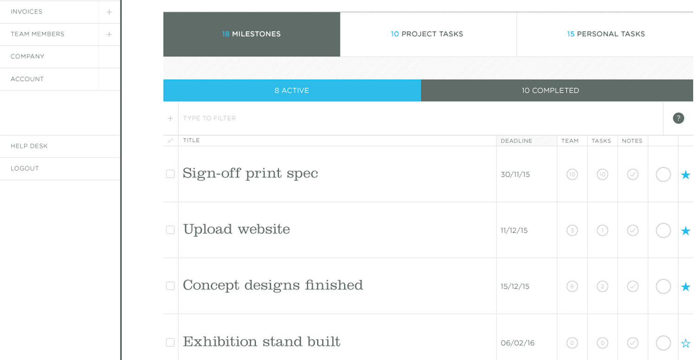
It started out as Solo, an artsy project management and invoicing tool for freelancers. Now, with Thrive Teams, you get the same beautiful interface for your team projects, along with comments, team reports, and other collaborative features. Thrive is filled with charts and dashboards that make sense of your project data, helping you see what’s left to do and how much you’ve accomplished at a glance.
There are milestones and tasks to organize your client projects, time tracking and expenses to log everything that goes into those projects, and beautiful reports and invoices to have something to show for your work. Then, when you go to take on new projects from clients, Thrive will show stats on them to see if you’ll likely get paid—or if you should focus on another project first.
Best for: creating tasks from client emails
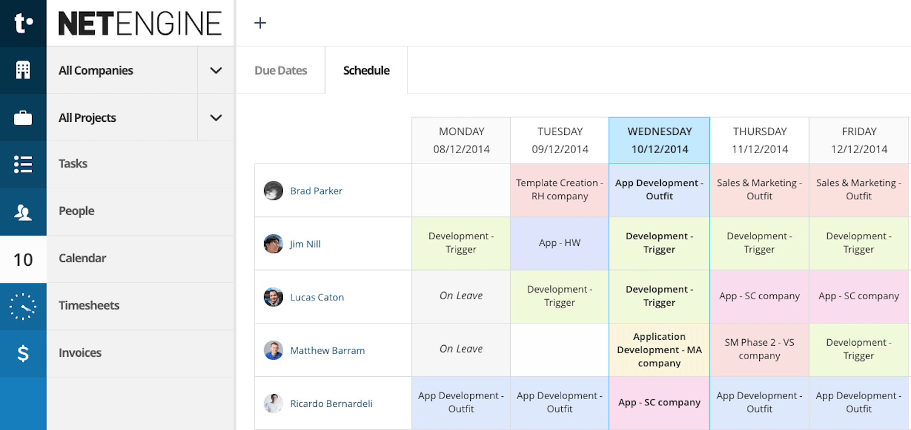
Feel like you’re always copying info from client emails to create new tasks on their projects? Trigger simplifies things, with an email address for each project. Just forward your client emails to their Trigger project, and the message will be turned into a task without needing to copy anything.
Then, once it’s time to start work on the project, just add milestones and set a project budget, and organize all the tasks into an achievable workflow. If anything won’t fit in your budget, it’s easy to cut it out then before you start work. Your clients can then see all of their projects you’re currently working on, so you’ll never have to remember to email them about how the project’s going again.
Best for: scheduling client projects
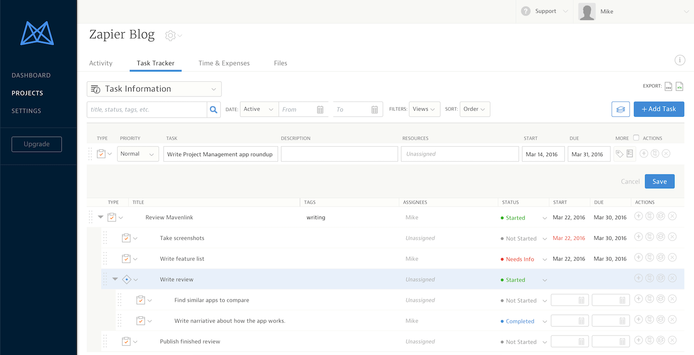
Ever wondered how changes to a project’s deadlines affected it? Mavenlink’s Gantt chart snapshots gives you a way to actually find out. When you first set up projects, Mavenlink has you choose a baseline for the project—the timeframe you think it’ll be completed within. Add tasks with dependencies, then you can see which tasks are blocking each other, and drag them to a new date to reschedule and make way for more important tasks. Then, you can take a snapshot, and if you make any changes in the future, you can compare the original baseline against the snapshot and final versions of your project deadlines.
Extended deadlines often mean additional costs, something Mavenlink also helps you guard against with project budgets. You can set a time and price budget for projects, and also set how much time each team member has, then make sure projects don’t go over budget or overwork your team. It’ll help you stay focused on improving your processes, so projects can get shipped on time and within budget more often.
Best for: simple client feedback on your work
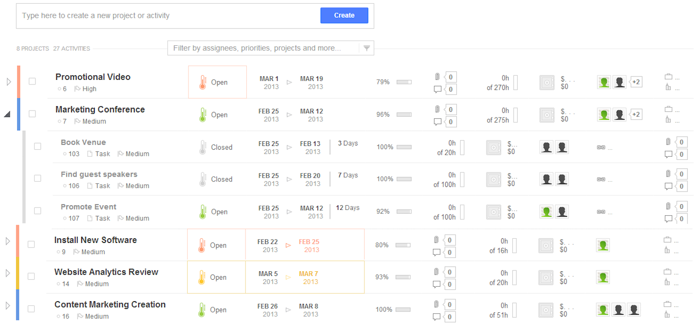
Easy Projects makes it easy to keep your clients informed. Each of your client projects includes a special guest portal, with a Twitter-like timeline of every change you’ve made to each of their projects. Clients can preview and approve work or chime in with add their own comments, and can add their own issues or requests to steer the project in the direction they want.
Keeping your own projects on track will be simple, too, with Easy Projects’ Gantt chart and critical path tools. Each task can include multiple dependencies—perhaps to list a task as something you can only do once a previous task is completed, and then tag another task that can be started once this task is finished. That’ll help you get a better picture of which tasks need tackled first—and how busy your workload will be over the coming weeks.
Best for: completing projects in a specific timeframe
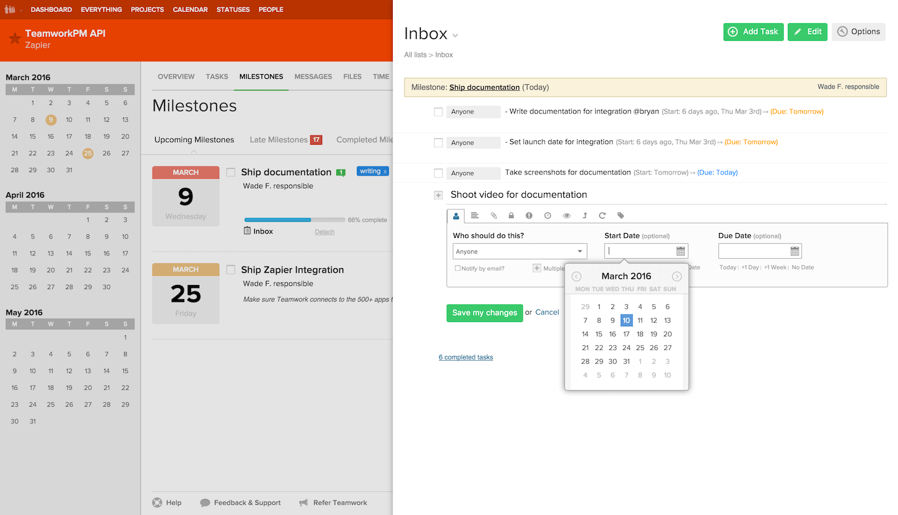
Projects shouldn’t drag on forever. Teamwork Projects makes sure you ship within the set timeframe with a strong emphasis on dates and milestones. New projects get a start and due date—something you can also add to tasks—while milestones and their related tasks are kept front-and-center throughout the app.
Adding tasks is simple—paste in a plain-text list, and Teamwork will turn each line into to-dos that you can tie to a milestone in a click. Then visualize tasks in a Gantt chart, add dependencies, share notes and links or update your team with built-in status messages, and sync files from your team’s file storage tool. Tie it in with Teamwork’s chat and desk tools for team chat and customer support, respectively, and you can push your projects towards completion while taking care of everything else in your company all from one place.
Best for: tracking everything about client projects
You need to track more than just tasks for your client projects, so Magnetic is designed to handle everything. It can manage client projects along with CRM and accounting data, for a full picture of everything your team is working on. Start out with estimates for client work, turn those into projects, then track your time and expense costs from suppliers and more.
Magnetic’s project tools will help you keep from overextending yourself, too. View each team member’s schedule on a calendar, then see how much is left on each project in a zoomed-out calendar to decide if there’s space for one more project or not. When it’s all done, you can then see an overview of your entire company’s profit, costs, time spent across all projects, and more.
Best for: rescheduling client tasks in a click
When you get overwhelmed with client projects, Project Bubble’s simple rescheduling tools will be a lifesaver. Just break projects down into tasks and subtasks, and link each subsequent task as dependent on the former. Then, when you need to reschedule things, just drag the first task to its new due date, and every linked task will be rescheduled along with it.
Starting off new projects is simple, too, with templates and recurring tasks. You can track time and resources being spent on projects, to make sure there’s actually space for the next project before you take it on. Then, when the project is done, Project Bubble will turn your work into a report with graphs and info for your clients.
Best for: projects of all sizes in one place
Every project doesn’t look the same. Some are ongoing, with to-dos always being added, while others are limited to a specific timeframe—and need to be invoiced. Zoho Projects is ready for them all. It includes almost every feature a project management app could, with milestones and time tracking, kanban and Gantt charts, forums and live chat. They’re each designed around more traditional project management styles—kanban boards show columns of priority or assignment, instead of the traditional free-form kanban columns—but that keeps everything working together while still offering unique views and tools.
That makes it easy to use it for every single thing your team works on. Perhaps you need an on-going project with simple to-dos and a forum to discuss internal processes, while your developer projects need milestones and tracked time, and that client project needs a way to send out invoices. You can manage them all in Zoho Projects, with team chat and a personalized dashboard to tie them all together.
Best for: managing team and client projects together
Internal and external projects have different requirements, but they still contain tasks and notes your team needs in one place. Active Collab can manage them all, with internal projects focused just on tasks while client projects also have a budget and client view. You can then share your work with a client and make sure task time stays within budget, while freely planning your internal projects.
Each project gets its own place to live with unique task lists and notes, but your own tasks and relevant updates from all projects will show up in your personal dashboard so you won’t miss anything. And, you can view any project’s tasks in a list, kanban board, or Gantt chart, so everyone on the team can work the way that fits them best.
Best for: free project management with add-ons
Freedcamp promises that project management doesn’t have to break the bank. It’s 100% free for core project features, with reasonably priced upgrades to add extra storage, invoice tools, a wiki, and more. That lets you start projects out for free, then upgrade as you bring on clients and need more features to collaborate.
You can organize projects in nested lists or kanban boards, with milestones to focus on the big goals and a detailed calendar view to see what’s coming up over the next week or month. Freedcamp stores everything about your project in one place—including discussions, shared team passwords, and files—so you’ll never have to search for the right thing to get tasks done. And when you need to send out invoices or track more details about clients, those extra upgrades are only a click away.
All projects don’t fit the same mode—and there might not be a project management app that’s designed with your specific workflow in mind. You need a feature from here, a report from there, and suddenly it seems like you’d better build your own project management app.
Don’t start coding. These apps are each flexible enough to manage your projects, with just the features you need. When you want live chat and custom fields, kanban and gantt charts, perhaps with a contact management tool on the side, these are the apps you can use to build a customized project management tool in minutes.
Best for: a spreadsheet turned into a Gantt chart
Love organizing your projects in spreadsheets, but wish they had a few more of the features that project management tools offer, like comments, notifications, and custom views? Smartsheet may be just what you need. It’s a spreadsheet app, one that lets you keep all of the documents you’re working on open at once in a tabbed view. But it’s also a project management app, with tools to build a task workflow and visualize project due dates right inside your spreadsheets.
You can add indented sub-rows, and fold them under their parents for simple project hierarchy. Add checkboxes for tasks, attach files to any row, and write in comments that can notify anyone on your team. Then, switch over to the Gantt chart view, and you can quickly see how long your spreadsheet-based project will take to complete. There are even conditional reminders, so you can get notifications whenever a project hits a specific status, a task with a certain name is added, or a due date is coming up. And, it’s still as flexible as any other spreadsheet.
For other tools to manage data in a spreadsheet, here’s our roundup of the best spreadsheet apps.
Best for: customizable, connected apps for everything
Podio is a flexible app builder, with pre-made apps for a wide variety of things—including project management. You can use their templates, or build your own with simple fields and quickly customize their appearance to show tasks on cards or data in spreadsheet-style lists. Each app you build can reference from the others—perhaps to pull inventory count into your projects, to make sure you have everything on hand to get your work done.
All your Podio apps are tied together on your dashboard, with an internal social network that shows updates from every app and status updates from your team. There’s live chat, too, There’s live chat, too, so you can discuss roadblocks and keep your project on track.. And if you work with other tools, Podio lets you add data to any app via a web form, email, CSV files, or RSS feeds, for a simple way to jumpstart projects with your files and templates.
For other tools that let you build customized, database-powered apps for projects and more, check out our roundup of the best database builder apps including Knack, QuickBase, Airtable and more.
Best for: self-hosted project management with the features you need
You can’t fully customize Redmine without writing into Ruby on Rails code—something you could do, though, if you’re so inclined since the entire tool is open-source. But the feature you’re looking for might already be out there: the Redmine community has built plugins to add scrum, kanban, CRM, time tracking, lifecycle management, and hundreds of other features.
Redmine looks a bit like the original Basecamp, with tabs for your tasks, issues, discussions and other tools, but its workflow is far different. Instead of tasks, Redmine is focused on issues, with workflows to fix bugs, add features, and ship those changes in releases, complete with a Gantt chart to track due dates. It comes with a wiki and forum to document and discuss your work, along with a diff view to see changes to documents and code files in your projects.
Best for: self-hosted apps for every part of your business
When you need apps for a dozen different functions, it can take forever to find the perfect app for each task. Odoo puts hundreds of tools—from eCommerce and CRM tools to an intranet to collaborate with your team—under one umbrella, so you can manage everything about your business in one place. Its project management tool includes both kanban and Gantt chart interfaces, to organize and schedule tasks easily in the same app. Include time estimates in projects—perhaps based on the last project’s reports—and its forecast view will estimate each team member’s workload for a more accurate estimate of when the project can be completed.
The project tool itself includes core features like kanban boards, Gantt charts, and a calendar for planning your work. Then, you can customize your workflows by adding other Odoo tools to the mix. There’s apps time tracking and invoicing for client projects, a live chat app to communicate with your team, a CRM to track your suppliers, and more. Each Odoo app integrates with the others, so you can pull time logs into tasks, tag contacts with the projects related to them, and see events from the Odoo calendar alongside your projects.
Can’t decide which which project management app would be best for your team? Perhaps you need a simple list too, but also need to chat with your team—or maybe you need a client-focused project app with a kanban tool to organize your workflow?
We’ve made a cheat sheet just for you. It list each of the apps in this roundup, with a table of 20 top features so you can sort through the apps and see exactly which one would be best for your needs. Just download a free copy of The Ultimate Guide to Project Management eBook from the Zapier Learning Center to get a copy of the quick reference guide. Then check out our project management apps spreadsheet where you can sort and filter each app by its features, pricing plans, and more.
Your project’s a mountain. An app can’t climb to the summit for you, and it won’t push you up the slope against your will. But the right tool can help ease the ascent, giving you a foothold where you can plan your next adventure.
The perfect project management app for one team won’t be the best for another—you each have unique needs, workflows, and goals, each of which call for a different tool. So try the three or four apps that seem most like they’d fit your team. See how they feel: do they help your projects make more sense, or do you feel like you have to push your projects into a mold and force the app to work for you?
It’s like trying on new shoes—one pair might look the nicest, but you’ll know when you’ve found the perfect fit. Then, it’s time to get everyone onboard, and plan your next projects inside your new project management app.
Before long, you’ll have scaled yet another mountain, and it’ll be time to click New Project all over again.
Now that you know some of the best project management apps, which one are you going to choose for your next project?
Can’t decide? You’re not alone. Choosing a project management app is a tough decision, since it affects so much of your team’s work and productivity. In the next chapter, we’ll look at how other project managers choose project management software, with insights that should help you pick the best tools for your team.
Enjoy this chapter? Read it online or share it at https://zapier.com/learn/ultimate-guide-to-project-management/best-project-management-software/.
Written by Zapier Marketer Matthew Guay.
Image Credits: Mountain climbing photo by Shaylor via Flickr.